data("iris")(Pertemuan 04) R: Visualisasi Dua Variabel, Time Series, dan ggplot2
R: Two-Variable Visualization, Time Series, and ggplot2
Offline di Departemen Matematika
Kembali ke Pengantar Sains Data
Melanjutkan pertemuan sebelumnya, kali ini kita akan mempelajari lebih lanjut tentang visualisasi menggunakan R, yaitu visualisasi dua variabel (termasuk line chart untuk data time series), serta tentang package bernama ggplot2 yang bisa mempermudah urusan visualisasi.
Kita coba gunakan dataset iris terlebih dahulu, ya. Aktifkan terlebih dahulu:
Agar konsisten (bahwa kita sedang berurusan dengan data frame), mari kita beri nama df1 saja:
df1 <- irisKita bisa lihat-lihat:
View(df1)
df1 Sepal.Length Sepal.Width Petal.Length Petal.Width Species
1 5.1 3.5 1.4 0.2 setosa
2 4.9 3.0 1.4 0.2 setosa
3 4.7 3.2 1.3 0.2 setosa
4 4.6 3.1 1.5 0.2 setosa
5 5.0 3.6 1.4 0.2 setosa
6 5.4 3.9 1.7 0.4 setosa
7 4.6 3.4 1.4 0.3 setosa
8 5.0 3.4 1.5 0.2 setosa
9 4.4 2.9 1.4 0.2 setosa
10 4.9 3.1 1.5 0.1 setosa
11 5.4 3.7 1.5 0.2 setosa
12 4.8 3.4 1.6 0.2 setosa
13 4.8 3.0 1.4 0.1 setosa
14 4.3 3.0 1.1 0.1 setosa
15 5.8 4.0 1.2 0.2 setosa
16 5.7 4.4 1.5 0.4 setosa
17 5.4 3.9 1.3 0.4 setosa
18 5.1 3.5 1.4 0.3 setosa
19 5.7 3.8 1.7 0.3 setosa
20 5.1 3.8 1.5 0.3 setosa
21 5.4 3.4 1.7 0.2 setosa
22 5.1 3.7 1.5 0.4 setosa
23 4.6 3.6 1.0 0.2 setosa
24 5.1 3.3 1.7 0.5 setosa
25 4.8 3.4 1.9 0.2 setosa
26 5.0 3.0 1.6 0.2 setosa
27 5.0 3.4 1.6 0.4 setosa
28 5.2 3.5 1.5 0.2 setosa
29 5.2 3.4 1.4 0.2 setosa
30 4.7 3.2 1.6 0.2 setosa
31 4.8 3.1 1.6 0.2 setosa
32 5.4 3.4 1.5 0.4 setosa
33 5.2 4.1 1.5 0.1 setosa
34 5.5 4.2 1.4 0.2 setosa
35 4.9 3.1 1.5 0.2 setosa
36 5.0 3.2 1.2 0.2 setosa
37 5.5 3.5 1.3 0.2 setosa
38 4.9 3.6 1.4 0.1 setosa
39 4.4 3.0 1.3 0.2 setosa
40 5.1 3.4 1.5 0.2 setosa
41 5.0 3.5 1.3 0.3 setosa
42 4.5 2.3 1.3 0.3 setosa
43 4.4 3.2 1.3 0.2 setosa
44 5.0 3.5 1.6 0.6 setosa
45 5.1 3.8 1.9 0.4 setosa
46 4.8 3.0 1.4 0.3 setosa
47 5.1 3.8 1.6 0.2 setosa
48 4.6 3.2 1.4 0.2 setosa
49 5.3 3.7 1.5 0.2 setosa
50 5.0 3.3 1.4 0.2 setosa
51 7.0 3.2 4.7 1.4 versicolor
52 6.4 3.2 4.5 1.5 versicolor
53 6.9 3.1 4.9 1.5 versicolor
54 5.5 2.3 4.0 1.3 versicolor
55 6.5 2.8 4.6 1.5 versicolor
56 5.7 2.8 4.5 1.3 versicolor
57 6.3 3.3 4.7 1.6 versicolor
58 4.9 2.4 3.3 1.0 versicolor
59 6.6 2.9 4.6 1.3 versicolor
60 5.2 2.7 3.9 1.4 versicolor
61 5.0 2.0 3.5 1.0 versicolor
62 5.9 3.0 4.2 1.5 versicolor
63 6.0 2.2 4.0 1.0 versicolor
64 6.1 2.9 4.7 1.4 versicolor
65 5.6 2.9 3.6 1.3 versicolor
66 6.7 3.1 4.4 1.4 versicolor
67 5.6 3.0 4.5 1.5 versicolor
68 5.8 2.7 4.1 1.0 versicolor
69 6.2 2.2 4.5 1.5 versicolor
70 5.6 2.5 3.9 1.1 versicolor
71 5.9 3.2 4.8 1.8 versicolor
72 6.1 2.8 4.0 1.3 versicolor
73 6.3 2.5 4.9 1.5 versicolor
74 6.1 2.8 4.7 1.2 versicolor
75 6.4 2.9 4.3 1.3 versicolor
76 6.6 3.0 4.4 1.4 versicolor
77 6.8 2.8 4.8 1.4 versicolor
78 6.7 3.0 5.0 1.7 versicolor
79 6.0 2.9 4.5 1.5 versicolor
80 5.7 2.6 3.5 1.0 versicolor
81 5.5 2.4 3.8 1.1 versicolor
82 5.5 2.4 3.7 1.0 versicolor
83 5.8 2.7 3.9 1.2 versicolor
84 6.0 2.7 5.1 1.6 versicolor
85 5.4 3.0 4.5 1.5 versicolor
86 6.0 3.4 4.5 1.6 versicolor
87 6.7 3.1 4.7 1.5 versicolor
88 6.3 2.3 4.4 1.3 versicolor
89 5.6 3.0 4.1 1.3 versicolor
90 5.5 2.5 4.0 1.3 versicolor
91 5.5 2.6 4.4 1.2 versicolor
92 6.1 3.0 4.6 1.4 versicolor
93 5.8 2.6 4.0 1.2 versicolor
94 5.0 2.3 3.3 1.0 versicolor
95 5.6 2.7 4.2 1.3 versicolor
96 5.7 3.0 4.2 1.2 versicolor
97 5.7 2.9 4.2 1.3 versicolor
98 6.2 2.9 4.3 1.3 versicolor
99 5.1 2.5 3.0 1.1 versicolor
100 5.7 2.8 4.1 1.3 versicolor
101 6.3 3.3 6.0 2.5 virginica
102 5.8 2.7 5.1 1.9 virginica
103 7.1 3.0 5.9 2.1 virginica
104 6.3 2.9 5.6 1.8 virginica
105 6.5 3.0 5.8 2.2 virginica
106 7.6 3.0 6.6 2.1 virginica
107 4.9 2.5 4.5 1.7 virginica
108 7.3 2.9 6.3 1.8 virginica
109 6.7 2.5 5.8 1.8 virginica
110 7.2 3.6 6.1 2.5 virginica
111 6.5 3.2 5.1 2.0 virginica
112 6.4 2.7 5.3 1.9 virginica
113 6.8 3.0 5.5 2.1 virginica
114 5.7 2.5 5.0 2.0 virginica
115 5.8 2.8 5.1 2.4 virginica
116 6.4 3.2 5.3 2.3 virginica
117 6.5 3.0 5.5 1.8 virginica
118 7.7 3.8 6.7 2.2 virginica
119 7.7 2.6 6.9 2.3 virginica
120 6.0 2.2 5.0 1.5 virginica
121 6.9 3.2 5.7 2.3 virginica
122 5.6 2.8 4.9 2.0 virginica
123 7.7 2.8 6.7 2.0 virginica
124 6.3 2.7 4.9 1.8 virginica
125 6.7 3.3 5.7 2.1 virginica
126 7.2 3.2 6.0 1.8 virginica
127 6.2 2.8 4.8 1.8 virginica
128 6.1 3.0 4.9 1.8 virginica
129 6.4 2.8 5.6 2.1 virginica
130 7.2 3.0 5.8 1.6 virginica
131 7.4 2.8 6.1 1.9 virginica
132 7.9 3.8 6.4 2.0 virginica
133 6.4 2.8 5.6 2.2 virginica
134 6.3 2.8 5.1 1.5 virginica
135 6.1 2.6 5.6 1.4 virginica
136 7.7 3.0 6.1 2.3 virginica
137 6.3 3.4 5.6 2.4 virginica
138 6.4 3.1 5.5 1.8 virginica
139 6.0 3.0 4.8 1.8 virginica
140 6.9 3.1 5.4 2.1 virginica
141 6.7 3.1 5.6 2.4 virginica
142 6.9 3.1 5.1 2.3 virginica
143 5.8 2.7 5.1 1.9 virginica
144 6.8 3.2 5.9 2.3 virginica
145 6.7 3.3 5.7 2.5 virginica
146 6.7 3.0 5.2 2.3 virginica
147 6.3 2.5 5.0 1.9 virginica
148 6.5 3.0 5.2 2.0 virginica
149 6.2 3.4 5.4 2.3 virginica
150 5.9 3.0 5.1 1.8 virginicaKolom-kolomnya adalah:
ls(df1)[1] "Petal.Length" "Petal.Width" "Sepal.Length" "Sepal.Width" "Species" Visualisasi Dua Variabel (dengan fungsi built-in)
Di pertemuan sebelumnya, kita sudah membuat visualisasi frekuensi dengan fungsi seperti barplot, pie, dan hist, yang “sudah ada dari sananya” atau disebut built-in. Untuk keperluan visualisasi dua variabel, juga tersedia beberapa fungsi built-in.
Boxplot
boxplot(df1$Sepal.Length) #1 variabel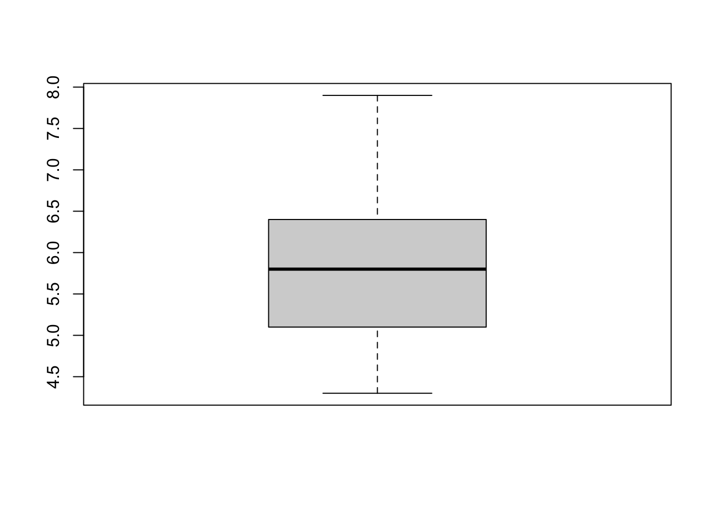
boxplot(df1$Sepal.Length, df1$Sepal.Width) #2 variabel atau lebih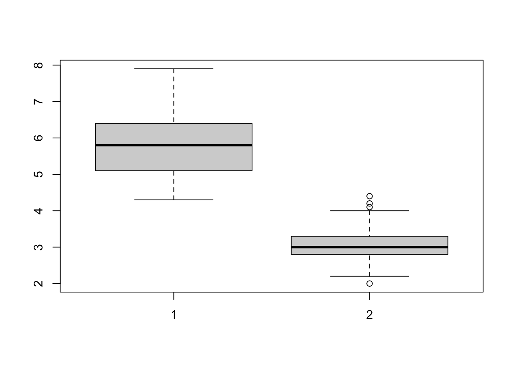
boxplot(df1$Sepal.Length, df1$Sepal.Width,
main = "Boxplot Perbandingan Sepal Length dan Sepal Width",
names = c("Sepal Length", "Sepal Width")) #tambahkan judul dan xlabel
boxplot(df1$Sepal.Length, df1$Sepal.Width,
main = "Boxplot Perbandingan Sepal Length dan Sepal Width",
names = c("Sepal Length", "Sepal Width"),
col = c("red", "blue")) #ganti warna
boxplot(df1$Sepal.Length, df1$Sepal.Width,
main = "Boxplot Perbandingan Sepal Length dan Sepal Width",
names = c("Sepal Length", "Sepal Width"),
col = c("red", "blue"),
horizontal = TRUE) #rotate jadi horizontal
boxplot(df1$Sepal.Length, df1$Sepal.Width,
main = "Boxplot Perbandingan Sepal Length dan Sepal Width",
names = c("Sepal Length", "Sepal Width"),
col = c("red", "blue"),
notch = TRUE) # jadi "mengerucut" di sekitar median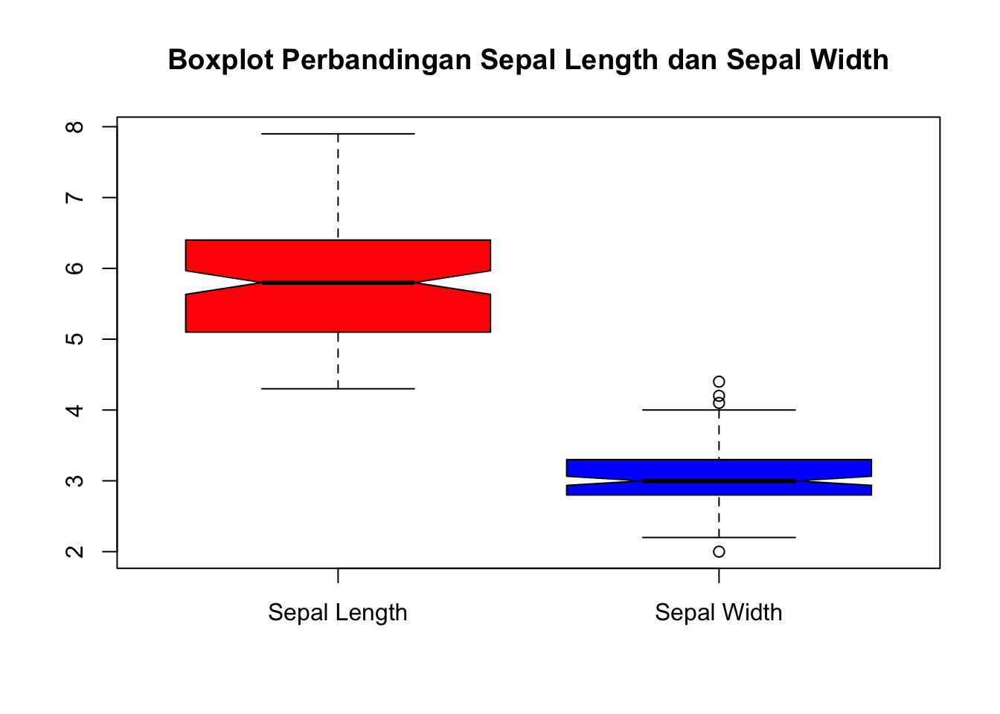
boxplot(df1$Sepal.Length ~ df1$Species)
boxplot(Sepal.Length ~ Species, data = df1)
boxplot(df1$Sepal.Length ~ df1$Species,
main = "Perbandingan Sepal Length berdasarkan Species",
xlab = "Species",
ylab = "Sepal Length",
col = c("blue","yellow","red"))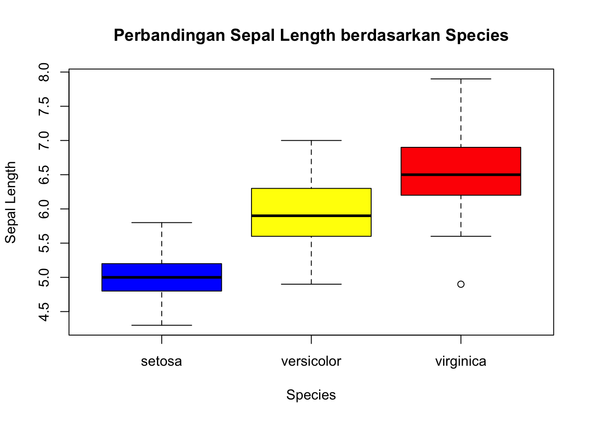
Scatter
Untuk menggambar scatter plot, gunakan fungsi plot
Plot paling dasar: semua variabel numerik menjadi scatter
plot(df1)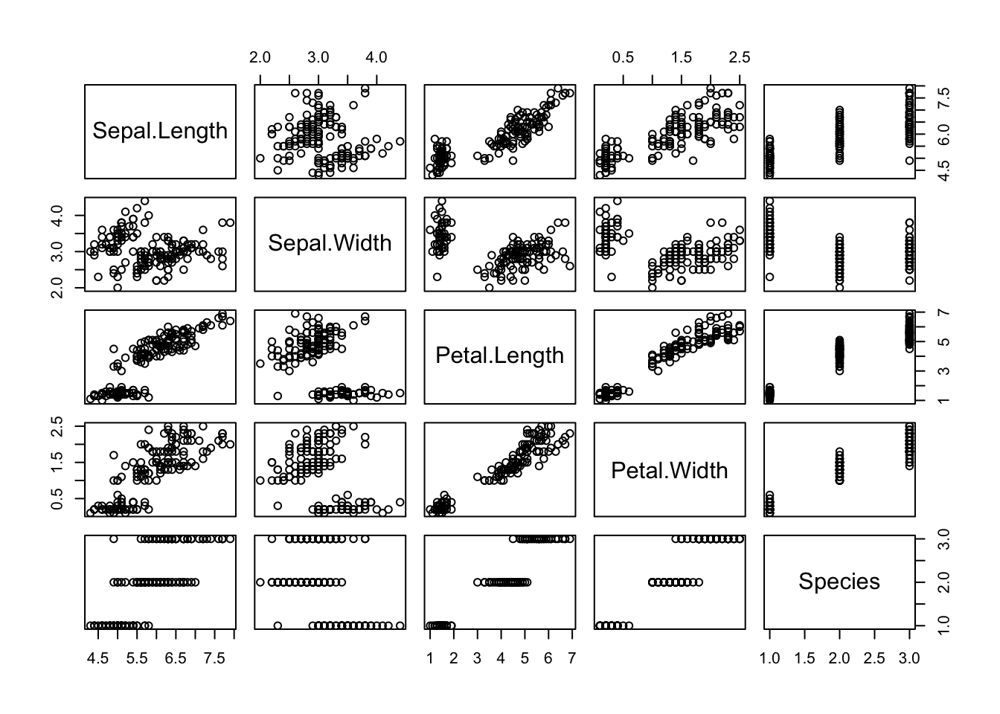
Scatter plot antar dua variabel pilihan:
plot(df1$Sepal.Length, df1$Sepal.Width)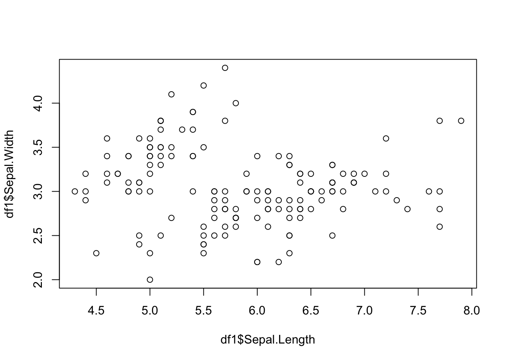
Tambahkan judul pakai main
plot(df1$Sepal.Length, df1$Sepal.Width,
main = "Ini Judul grafiknya")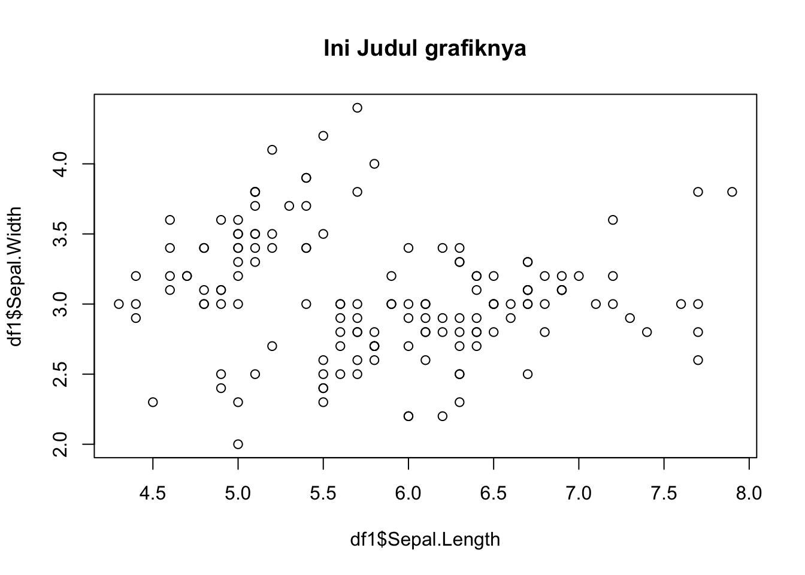
Tambahkan label sumbu
plot(df1$Sepal.Length, df1$Sepal.Width,
main = "Ini Judul grafiknya",
xlab = "Sumbu X",
ylab = "Sumbu Y")
Beri warna
plot(df1$Sepal.Length, df1$Sepal.Width,
main = "Scatter Plot Sepal Length dengan Sepal Width",
xlab = "Sepal Length",
ylab = "Sepal Width",
col = "blue")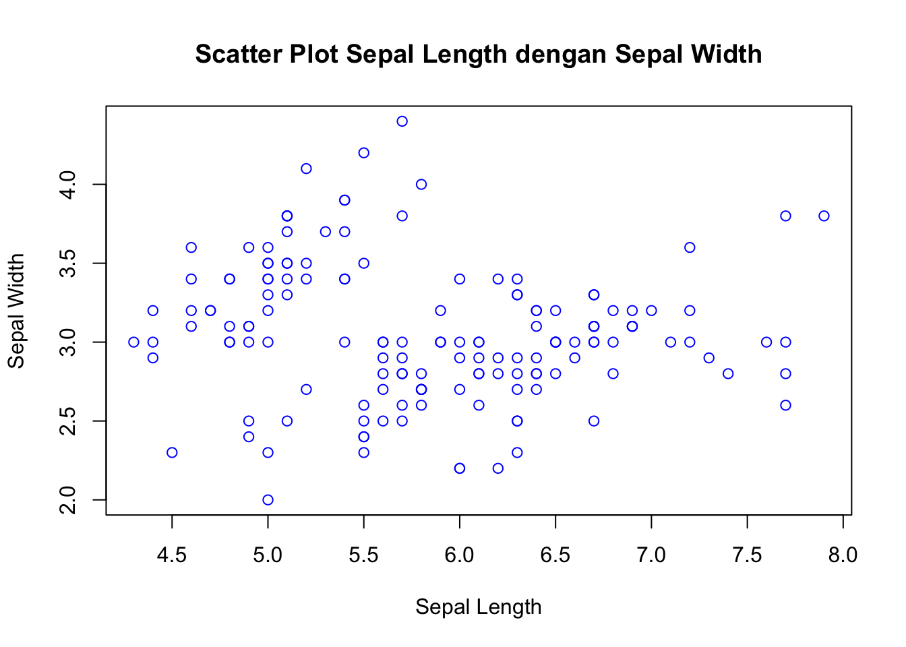
(Pengayaan) Visualisasi Tambahan (dengan fungsi built-in)
Stem and Leaf Plot
Untuk melihat persebaran data (min, max, distribusi), mirip histogram
?stem
View(ChickWeight) #data dari r
stem(ChickWeight$weight)
The decimal point is 1 digit(s) to the right of the |
2 | 599999999
4 | 00000111111111111111111112222222222222223333456678888888899999999999+38
6 | 00111111122222222333334444455555666677777888888900111111222222333334+8
8 | 00112223344444455555566777788999990001223333566666788888889
10 | 0000111122233333334566667778889901122223445555667789
12 | 00002223333344445555667788890113444555566788889
14 | 11123444455556666677788890011234444555666777777789
16 | 00002233334444466788990000134445555789
18 | 12244444555677782225677778889999
20 | 0123444555557900245578
22 | 0012357701123344556788
24 | 08001699
26 | 12344569259
28 | 01780145
30 | 355798
32 | 12712
34 | 1
36 | 13hist(ChickWeight$weight) #buat perbandingan
min(ChickWeight$weight) #cek nilai minimumnya[1] 35max(ChickWeight$weight) #cek maxnya[1] 373Kalau ternyata min sama maxnya kurang tepat, ganti scalenya
stem(ChickWeight$weight, scale = 5)
The decimal point is 1 digit(s) to the right of the |
3 | 599999999
4 | 000001111111111111111111122222222222222233334
4 | 5667888888889999999999999
5 | 00000011111111222233333444
5 | 5555566667778888899999
6 | 001111111222222223333344444
6 | 555556666777778888889
7 | 001111112222223333344444444
7 | 6667778889999
8 | 001122233444444
8 | 5555556677778899999
9 | 0001223333
9 | 566666788888889
10 | 0000111122233333334
10 | 5666677788899
11 | 0112222344
11 | 5555667789
12 | 0000222333334444
12 | 555566778889
13 | 0113444
13 | 555566788889
14 | 111234444
14 | 5555666667778889
15 | 0011234444
15 | 555666777777789
16 | 000022333344444
16 | 6678899
17 | 000013444
17 | 5555789
18 | 12244444
18 | 55567778
19 | 222
19 | 5677778889999
20 | 0123444
20 | 5555579
21 | 0024
21 | 5578
22 | 00123
22 | 577
23 | 01123344
23 | 556788
24 | 0
24 | 8
25 | 001
25 | 699
26 | 12344
26 | 569
27 | 2
27 | 59
28 | 01
28 | 78
29 | 014
29 | 5
30 | 3
30 | 5579
31 |
31 | 8
32 | 12
32 | 7
33 | 12
33 |
34 | 1
34 |
35 |
35 |
36 | 1
36 |
37 | 3stem(ChickWeight$weight, width = 100)
The decimal point is 1 digit(s) to the right of the |
2 | 599999999
4 | 0000011111111111111111111222222222222222333345667888888889999999999999000000111111112222+18
6 | 0011111112222222233333444445555566667777788888890011111122222233333444444446667778889999
8 | 00112223344444455555566777788999990001223333566666788888889
10 | 0000111122233333334566667778889901122223445555667789
12 | 00002223333344445555667788890113444555566788889
14 | 11123444455556666677788890011234444555666777777789
16 | 00002233334444466788990000134445555789
18 | 12244444555677782225677778889999
20 | 0123444555557900245578
22 | 0012357701123344556788
24 | 08001699
26 | 12344569259
28 | 01780145
30 | 355798
32 | 12712
34 | 1
36 | 13Dot Diagram
?dotchart
View(mtcars)Paling Sederhana
dotchart(mtcars$mpg)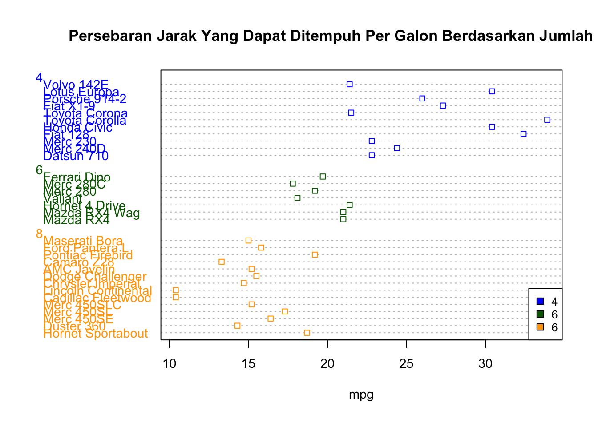
Tambah Judul dan Label
dotchart(mtcars$mpg, labels = row.names(mtcars),
cex = 0.9, xlab = "mpg",
main = "Persebaran Jarak Yang Dapat Ditempuh Per Galon")
Berdasarkan Grup
grps <- as.factor(mtcars$cyl)
my_cols <- c("blue", "darkgreen", "orange")
dotchart(mtcars$mpg, labels = row.names(mtcars),
groups = grps, gcolor = my_cols,
color = my_cols[grps],
cex = 0.9, pch = 22, xlab = "mpg",
main = "Persebaran Jarak Yang Dapat Ditempuh Per Galon Berdasarkan Jumlah Silinder")
legend("bottomright", legend = c("4","6", "6"),
fill = my_cols, cex = 0.8)
Time Series dan Line Chart
Data periodik terhadap waktu (misalnya data tahunan atau data bulanan) disebut time series data (data runtun waktu), biasa disebut time series saja atau disingkat “TS”. Visualisasi line chart biasa digunakan untuk data time series, dan begitu juga sebaliknya, data time series biasa divisualisasikan dengan line chart.
Mencari data time series
Sayangnya, dataset iris tidak memiliki data time series. Bahkan, dari semua dataset yang built-in, data time series cenderung berupa dataset tersendiri, yang memang khusus menyimpan data variabel tertentu saja terhadap waktu.
Oleh karena itu, mari kita coba dataset lain. Kalian bisa melihat-lihat dataset yang sudah tersedia di R dengan perintah data()
data()Sebenarnya, tiap dataset berasal dari sebuah package. Perhatikan bahwa dataset iris berasal dari package bernama datasets (yang memang sudah built-in)
?irisKita bisa spesifik melihat daftar dataset yang berasal dari package tertentu dengan tambahan opsi package
data(package = "datasets")Untuk data time series, kita bisa mencoba misalnya nhtemp, rata-rata tahunan untuk suhu di kota New Haven di Amerika Serikat
data("nhtemp")Mari kita lihat:
View(nhtemp)
nhtempTime Series:
Start = 1912
End = 1971
Frequency = 1
[1] 49.9 52.3 49.4 51.1 49.4 47.9 49.8 50.9 49.3 51.9 50.8 49.6 49.3 50.6 48.4
[16] 50.7 50.9 50.6 51.5 52.8 51.8 51.1 49.8 50.2 50.4 51.6 51.8 50.9 48.8 51.7
[31] 51.0 50.6 51.7 51.5 52.1 51.3 51.0 54.0 51.4 52.7 53.1 54.6 52.0 52.0 50.9
[46] 52.6 50.2 52.6 51.6 51.9 50.5 50.9 51.7 51.4 51.7 50.8 51.9 51.8 51.9 53.0Terlihat bahwa data ini berupa time series yang tidak langsung berbentuk tabel. Di R, data berjenis time series memang diberi perhatian khusus, sehingga menjadi yang namanya “time series object”. Data runtun waktu dipelajari lebih lanjut di mata kuliah Metode Peramalan (Forecasting Methods / Time Series Analysis).
Line chart instan dari objek time series
Di pertemuan kali ini, kita hanya akan membuat visualisasinya dengan line chart.
Perhatian khusus tersebut ternyata sangat mempermudah cara memvisualisasikannya:
plot(nhtemp)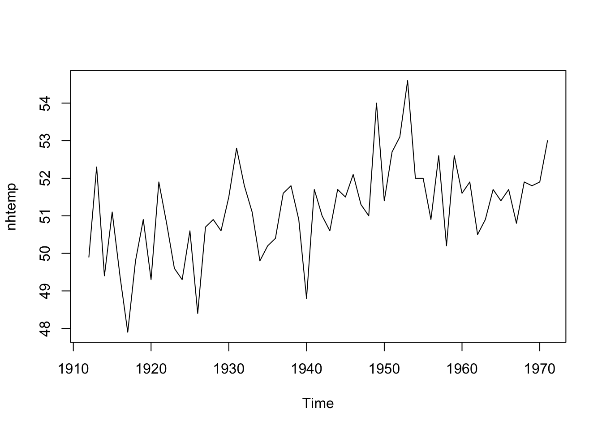
Langsung jadi!
Namun, apabila sewaktu-waktu kalian berurusan dengan tabel data yang sebenarnya berupa time series, mungkin R tidak akan langsung mengakuinya sebagai time series. Tidak masalah, karena kita masih bisa membuat line chart dari data frame.
Mengubah time series object menjadi data frame
Sebelum bisa membuat line chart dari data frame, datanya harus ada. Kalian bisa sewaktu-waktu import data kalian sendiri, kalau ada. Di sini, kita hanya akan mengubah time series object nhtemp menjadi data frame.
df_nhtemp <- data.frame(Time=time(nhtemp),
Temp=as.matrix(nhtemp))Mari kita lihat:
View(df_nhtemp)
df_nhtemp Time Temp
1 1912 49.9
2 1913 52.3
3 1914 49.4
4 1915 51.1
5 1916 49.4
6 1917 47.9
7 1918 49.8
8 1919 50.9
9 1920 49.3
10 1921 51.9
11 1922 50.8
12 1923 49.6
13 1924 49.3
14 1925 50.6
15 1926 48.4
16 1927 50.7
17 1928 50.9
18 1929 50.6
19 1930 51.5
20 1931 52.8
21 1932 51.8
22 1933 51.1
23 1934 49.8
24 1935 50.2
25 1936 50.4
26 1937 51.6
27 1938 51.8
28 1939 50.9
29 1940 48.8
30 1941 51.7
31 1942 51.0
32 1943 50.6
33 1944 51.7
34 1945 51.5
35 1946 52.1
36 1947 51.3
37 1948 51.0
38 1949 54.0
39 1950 51.4
40 1951 52.7
41 1952 53.1
42 1953 54.6
43 1954 52.0
44 1955 52.0
45 1956 50.9
46 1957 52.6
47 1958 50.2
48 1959 52.6
49 1960 51.6
50 1961 51.9
51 1962 50.5
52 1963 50.9
53 1964 51.7
54 1965 51.4
55 1966 51.7
56 1967 50.8
57 1968 51.9
58 1969 51.8
59 1970 51.9
60 1971 53.0Line chart dari data frame
Sekarang tinggal kita gambar, dengan cara menggambar scatter plot yang kemudian diberi opsi type = "l" agar menjadi line chart:
plot(df_nhtemp$Time, df_nhtemp$Temp, type="l")
plot(df_nhtemp$Time, df_nhtemp$Temp, type="l",
xlab="Time", ylab="Temp",
main="Average Yearly Temperature in New Haven")
Hmm, kurang bagus ya. Untuk line chart yang lebih bagus (dan juga berbagai plot lainnya) serta lebih fleksibel, selanjutnya kita akan mencoba ggplot2, sebuah package untuk plotting di R yang sangat terkenal dan sering digunakan di kalangan pengguna R.
ggplot2
Fungsi-fungsi plot yang tersedia di R secara built-in (terkadang disebut “base R”), yang sudah kita eksplorasi sejauh ini, cenderung terbatas dan tidak begitu fleksibel. Kalangan pengguna R cenderung menggunakan sebuah package terkenal di R untuk keperluan plotting, yaitu ggplot2.
Instal terlebih dahulu, kalau belum:
install.packages("ggplot2")Lalu aktifkan:
library(ggplot2)Dataset yang tersedia di ggplot2
Kebetulan, ggplot2 menyediakan beberapa dataset (yang tidak tersedia di base R) yang bisa kita gunakan untuk mempelajari dan mengeksplorasi ggplot2.
data(package = "ggplot2")Kita lihat, data time series tersedia di ggplot2, bernama economics. Mari kita lihat-lihat:
df2 <- economicsView(df2)
df2# A tibble: 574 × 6
date pce pop psavert uempmed unemploy
<date> <dbl> <dbl> <dbl> <dbl> <dbl>
1 1967-07-01 507. 198712 12.6 4.5 2944
2 1967-08-01 510. 198911 12.6 4.7 2945
3 1967-09-01 516. 199113 11.9 4.6 2958
4 1967-10-01 512. 199311 12.9 4.9 3143
5 1967-11-01 517. 199498 12.8 4.7 3066
6 1967-12-01 525. 199657 11.8 4.8 3018
7 1968-01-01 531. 199808 11.7 5.1 2878
8 1968-02-01 534. 199920 12.3 4.5 3001
9 1968-03-01 544. 200056 11.7 4.1 2877
10 1968-04-01 544 200208 12.3 4.6 2709
# ℹ 564 more rowsls(df2)[1] "date" "pce" "pop" "psavert" "uempmed" "unemploy"Data time series ini terdiri dari sejumlah kolom terhadap waktu.
Dasar-dasar ggplot2 dengan line chart
Menggunakan line chart, kita bisa memvisualisasikan bagaimana perubahan suatu variabel terhadap variabel waktu (date). Misalnya, kita bisa melihat bagaimana perubahan banyaknya pengangguran (unemploy) dari tahun ke tahun.
Apabila kita gunakan fungsi built-in untuk line chart, jadinya seperti berikut:
plot(df2$date, df2$unemploy,
type = "l",
col = "red")
Mari kita coba buat dengan ggplot2.
Langkah pertama adalah menentukan data frame yang ingin kita gunakan, serta variabel yang akan di sumbu x dan variabel yang akan di sumbu y. Syntax-nya seperti berikut.
ggplot(df2, aes(x = date, y = unemploy))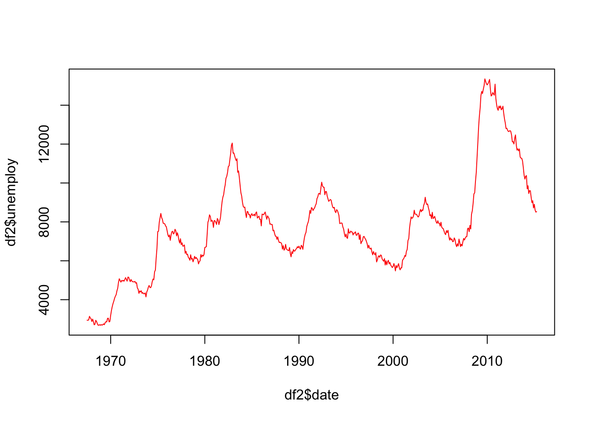
aes artinya aesthetic (estetika), sebenarnya dalam artian “sesuatu yang bisa dilihat”. Kita memang ingin melihat data date untuk sumbu x dan unemploy untuk sumbu y, sehingga kita tuliskan seperti itu.
Namun, sejauh ini, isi plot masih kosong. Kita baru membuat canvas nya saja, belum garis-garisnya.
Agar ada garis, kita “tambahkan” dengan fungsi geom_line() seperti berikut.
ggplot(df2, aes(x = date, y = unemploy)) +
geom_line()
Mungkin tampak aneh, seolah-olah fungsi dijumlahkan dengan fungsi. Cara kerjanya kurang lebih seperti berikut.
Sebenarnya, fungsi
ggplotmenghasilkan “objek” atau “benda” yang berupa plot kosong.Serupa, fungsi
geom_linemenghasilkan “objek” berupa perintah untuk menggambarkan garis-garis.Begitu kita jumlahkan, objek hasil
geom_linediterapkan ke objek hasilggplot.Hasil jumlahnya berupa objek plot baru, yaitu line chart yang kita inginkan.
Objek baru itulah yang kemudian ditampilkan.
Cara ini sangat berbeda dengan cara kerja fungsi-fungsi plotting di base R yang memang berupa perintah.
Penjumlahan seperti itu di ggplot2 bisa kita bayangkan sebagai “komposisi”, yang pada akhirnya menghasilkan suatu objek plot akhir. Ibaratnya seperti penulisan penjumlahan bilangan di R,
2+3[1] 5yang memang menggabungkan 2 dengan 3 untuk menghasilkan hasil akhir yaitu 5, yang kemudian ditampilkan.
Sebagaimana hasil penjumlahan bilangan itu bisa kita simpan ke dalam variabel, “hasil jumlahan plot” dalam penggunaan ggplot2 sebenarnya juga bisa kita simpan ke dalam variabel.
tren_pengangguran <- ggplot(df2, aes(x = date, y = unemploy)) +
geom_line()Karena sudah tersimpan ke dalam variabel, kita bisa menampilkan plot akhir tersebut kapan saja, cukup dengan memanggil variabelnya:
tren_pengangguran
Fleksibilitas seperti ini tidak ada ketika kita menggunakan fungsi-fungsi plotting dari base R.
Tentunya, kita juga bisa menambahkan label, dengan menambahkan labs seperti berikut
ggplot(df2, aes(x = date, y = unemploy)) +
geom_line() +
labs(
title = "Line Chart Tahun dengan Jumlah Pengangguran",
x = "Tahun",
y = "Jumlah Pengangguran"
)
Scatter
Mirip, tetapi menggunakan geom_point daripada geom_line
ggplot(df1, aes(x = Petal.Length, y = Petal.Width, color = Species)) +
geom_point()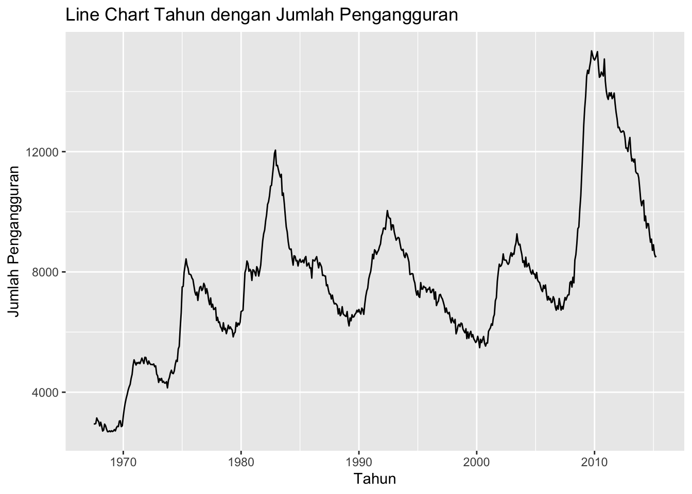
ggplot(df1, aes(x = Sepal.Length, y = Sepal.Width, color = Species)) +
geom_point() +
labs(
title = "Scatter Plot Sepal Length vs Sepal Width",
x = "Sepal Length",
y = "Sepal Width",
color = "Species Names"
)
Bar Chart
df3 <- mtcarsggplot(df3, aes(x = factor(cyl), fill = "red")) +
geom_bar()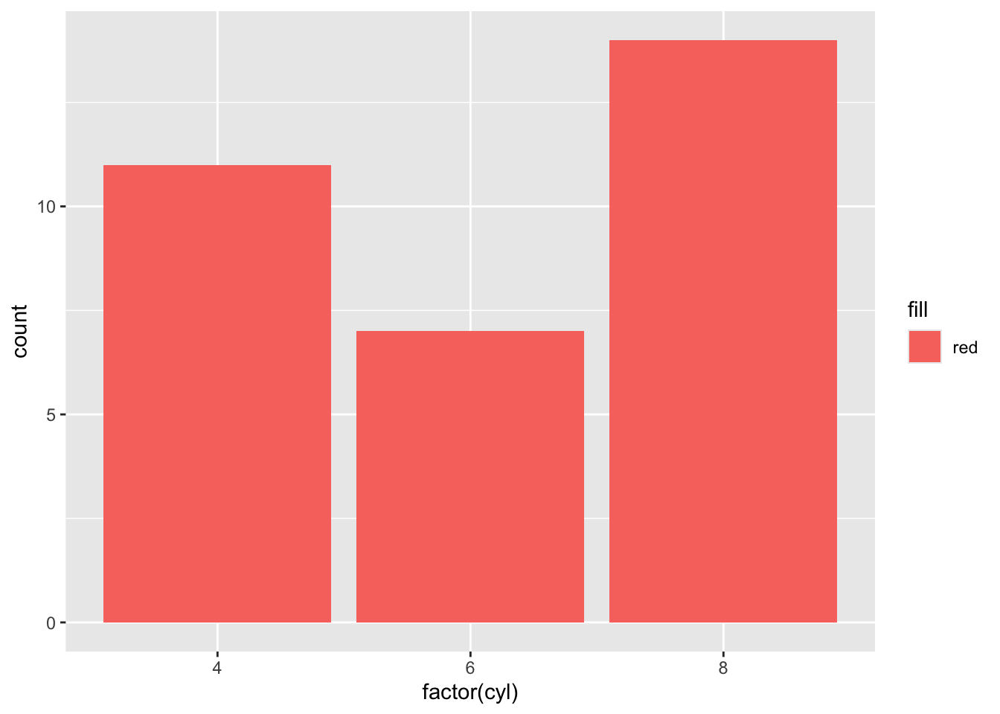
Pie Chart
Sayangnya, di ggplot2 tidak ada fungsi khusus untuk pie chart. Namun, kita bisa akali dengan membuat bar chart yang kemudian diterapkan koordinat polar
ggplot(df3, aes(x = factor(1), fill = factor(cyl))) +
geom_bar(width = 1) +
coord_polar(theta = "y")
Histogram
Di ggplot2, histogram juga seolah-olah seperti sejenis bar chart
df4 <- diamondsggplot(df4, aes(x = cut)) +
geom_bar(aes(fill = cut))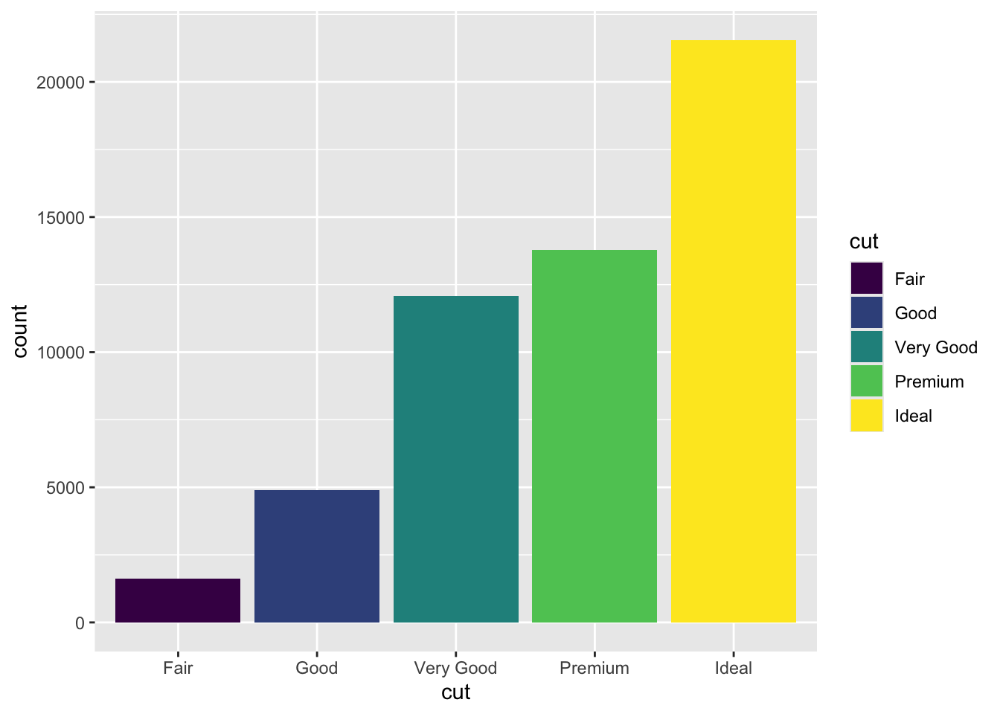
ggplot(df1, aes(x = Sepal.Length)) +
geom_histogram(binwidth = 0.5, fill = "skyblue", color = "black")
Boxplot
ggplot(df1, aes(x = Species, y = Sepal.Length)) +
geom_boxplot(fill = "skyblue", color = "red")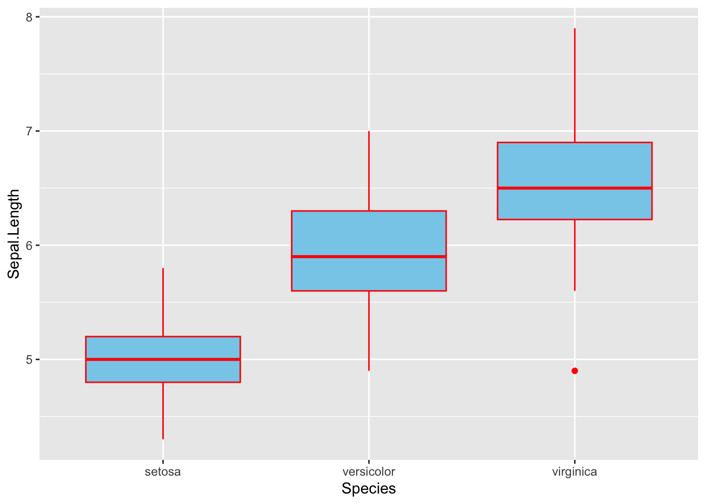
df5 <- data.frame(category = c("A", "B", "C"), value = c(20, 15, 25))ggplot(df5, aes(x = category, y = value)) +
geom_col()
Lampiran untuk belajar lebih lanjut
ggplot2: https://r-statistics.co/Top50-Ggplot2-Visualizations-MasterList-R-Code.html